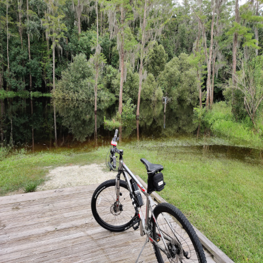

Basma's hobbies
While Bama’s main hobby is cooking and exploring the arts of international cuisine, she also has other interests and hobbies that she enjoys in her free time. Basma likes the outdoors and living in the state of Florida brings a lot to explore when it comes to nature. Basma likes riding her mountain bike across state parks such as Wekiwa Springs and Blue Spring.
For Basma, being around nature is the most relaxing and inspiring experience a person can have. Camping is another activity that Basma enjoys around nature. Camping in a tent or a wooden cabin by the river is Basma’s favorite activity. While camping Basma loves to prepare some of her favorite barbecue dishes and enjoys dinner under the stars.

Being by the beach is also something that Basma enjoys a lot. Florida has many of the world’s most beautiful beaches and Basma wants to visit them all. While at the beach, Basma loves swimming and sunbathing. She also loves pier fishing, jet skiing and boating activities. Every now and then, Basma enjoys going on cruises and spending a couple of days on the ocean and exploring other tourist destinations.